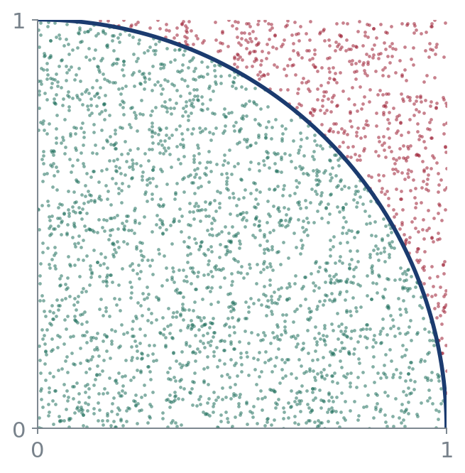
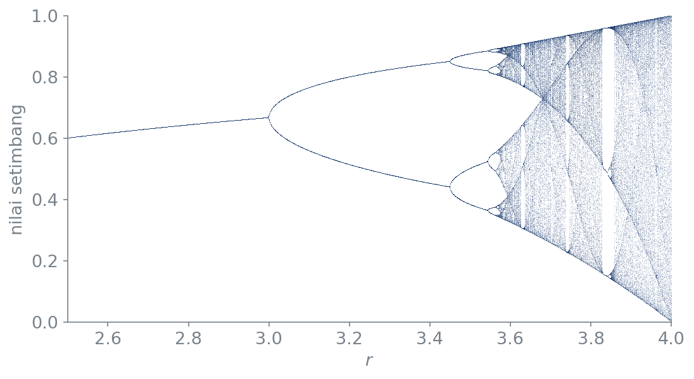
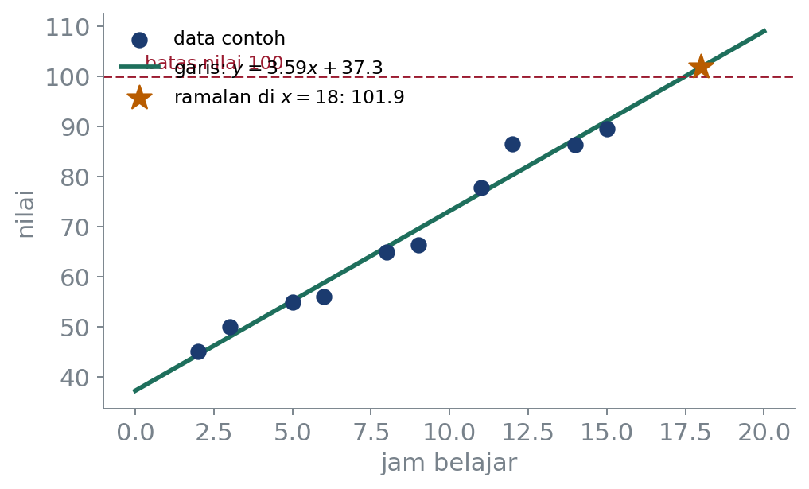

Pemrograman Komputer · Kelas B
Dr. Mohammad Jamhuri
Program Studi Matematika · Fakultas Sains dan Teknologi
UIN Maulana Malik Ibrahim Malang
Pertemuan pembuka · 120 menit
Janji hari ini:
Kamu pulang sudah pernah menjalankan Python sendiri, dan tahu persis ke mana satu semester ini membawamu.
Kelas utama · 120 menit
Gagasan, alasan, dan duduk perkaranya. Di sinilah kita membahas kenapa sesuatu bekerja begitu.
Praktikum · 90 menit
Dua belas pertemuan terpisah. Di sinilah tanganmu bekerja, dan kamu membuktikan sendiri bahwa itu bekerja.
Keduanya memakai buku yang sama. Tiap pertemuan praktikum menunjuk bab yang sudah kita bahas di sini.
Yang melewatkan salah satunya akan merasa mata kuliah ini jauh lebih sulit daripada seharusnya.
Berapa lama kamu sanggup melempar koin tiga ribu kali, lalu mencatat hasilnya?
Komputer menyelesaikannya dalam waktu
0,002 detik.
Bukan karena komputer lebih pintar.
Karena ia tidak pernah bosan.
Bagian satu
Ketiganya bisa ditulis dalam kurang dari sepuluh baris, dan ketiganya akan kamu kerjakan sendiri sebelum semester ini habis.
import numpy as np acak = np.random.default_rng(20260827) x, y = acak.random(3000), acak.random(3000) di_dalam = x**2 + y**2 <= 1 print(4 * di_dalam.sum() / 3000)
3.168
Sebar titik acak di bujur sangkar. Hitung berapa yang jatuh di dalam seperempat lingkaran. Perbandingannya adalah \(\pi/4\).

Namanya metode Monte Carlo.
Dipakai sungguhan untuk menghitung integral yang tidak punya penyelesaian tertutup, dari fisika partikel sampai penetapan harga opsi keuangan.
\[ x_{n+1} = r\,x_n(1-x_n) \]
r = np.linspace(2.5, 4, 1400) x = 1e-5 * np.ones_like(r) for i in range(1100): x = r * x * (1 - x) if i > 900: plt.plot(r, x, ",")
Persamaan sesederhana ini. Perilakunya tidak sederhana sama sekali.

Enam baris. Menggambar ini dengan tangan mustahil. Dengan Python, enam baris dan dua detik. Perkakas menentukan pertanyaan apa yang berani kamu tanyakan.
a, b = np.polyfit(jam, nilai, 1) print(a * 18 + b)
101.86
Dua baris. Komputer mencari garis yang jumlah kuadrat simpangannya terkecil, lalu memakainya untuk menebak nilai yang belum pernah diamati.

101,86
Nilai di atas seratus.
Pelajaran pertama tentang model. Angka yang keluar dari komputer selalu terlihat meyakinkan. Tugas kamulah yang menilai apakah ia masuk akal.
Belajar dari data yang ada,
untuk menebak data yang belum ada.
Python bukan pengganti matematika.
Python adalah pengeras suaranya.
Untuk kamu, sekarang
Untuk kamu, nanti
Sekali kamu bisa satu bahasa dengan baik, bahasa kedua jauh lebih mudah. Yang kita latih sebenarnya cara berpikirnya.
Bagian dua
Dasar bahasa
Bab 1–5
Lingkungan kerja, tipe data, percabangan dan perulangan, fungsi, struktur data bawaan
Program tangguh
Bab 6–7
Berkas dan pengodean, penanganan galat, objek dan kelas secukupnya
Perkakas ilmiah
Bab 8–12
NumPy, Matplotlib, pandas, analisis data eksploratif, SymPy
Ke model
Bab 13–17
Aljabar linear, gradient descent, scikit-learn, studi kasus, praktik baik
Tiap tahap memakai tahap sebelumnya. Tidak ada satu pun yang bisa dilompati.
Sesudah tahap ini kamu bisa menerjemahkan sebuah prosedur matematika menjadi program yang berjalan. Ini bagian yang paling banyak menuntut kesabaran.
Sesudah tahap ini programmu tidak lagi runtuh saat datanya cacat, dan bisa dibaca orang lain tanpa kamu perlu menungguinya.
Perhatikan judul bab 7: secukupnya. Kita tidak akan berlama-lama di sana.
Sesudah tahap ini kamu bisa mengolah data sungguhan, menggambarkannya, dan menyuruh komputer mengerjakan aljabar simbolik yang selama ini kamu kerjakan dengan pensil.
Sesudah tahap ini kamu melatih model, menakar mutunya dengan jujur, dan tahu persis di mana angka bagus bisa menipu.
Perhatikan bunyinya. Tidak satu pun berbunyi “hafal sintaks”.
Bagian tiga
| Prak | Topik | Bab |
|---|---|---|
| 1 | Lingkungan, tipe data | 1–2 |
| 2 | Percabangan, perulangan | 3 |
| 3 | Fungsi, lingkup, modul | 4 |
| 4 | List, dict, generator | 5 |
| 5 | Berkas, exception | 6 |
| 6 | Berorientasi objek | 7 |
| Prak | Topik | Bab |
|---|---|---|
| 7 | NumPy | 8 |
| 8 | Matplotlib | 9 |
| 9 | pandas dan EDA | 10–11 |
| 10 | SymPy | 12 |
| 11 | Aljabar, gradient | 13–14 |
| 12 | scikit-learn, kasus | 15–17 |
Praktikum selalu menyusul babnya, tidak pernah mendahului. Datang ke praktikum tanpa membaca babnya sama dengan membuang sembilan puluh menit.
Kenapa menduga dulu
Menduga memaksa otakmu berkomitmen. Saat dugaanmu meleset, kamu akan ingat kenapa. Yang langsung menjalankan kode hampir tidak belajar apa-apa.
Dugaan yang salah tidak mengurangi nilai. Yang mengurangi nilai adalah tidak menduga.
Semuanya terkumpul di
jamhuri-tech.github.io/pemrograman-komputer
Tidak punya laptop yang kuat? Tidak masalah. Colab dan Kaggle berjalan di peramban, gratis.
Bagian empat
Tidak ada pertemuan pertama yang selesai tanpa kamu menjalankan Python sendiri.
Ponsel pun cukup untuk hari ini. Pemasangan di mesin sendiri kita urus di praktikum pertama.
colab.research.google.comprint(2 ** 100)
1267650600228229401496703205376
Tiga puluh satu angka, tepat, tanpa pembulatan. Bahasa lain umumnya menyerah di angka kesembilan belas.
Ketik ini. Jangan disalin tempel.
nama = input("Siapa namamu? ") n = int(input("Berapa angkamu? ")) jumlah = 0 for i in range(1, n + 1): jumlah += i print(nama, "->", jumlah)
Sebelum menjalankan. Duga dulu: kalau kamu memasukkan \(n = 100\), keluarannya berapa?
Sesudah berhasil. Ubah agar ia
menjumlahkan bilangan genap saja. Petunjuk:
range sanggup melangkah dua-dua.
Aturan mata kuliah ini. Nol persen salin tempel untuk kode yang kamu serahkan. Membaca kode orang lain boleh; menyerahkannya sebagai milikmu tidak.
Tulis di selembar kertas, lalu kumpulkan.
Yang nomor dua paling berguna buat saya. Tulis jujur, tidak dinilai.
Kelas berikutnya: Bab 1 dan 2.
Menyiapkan lingkungan kerja, lalu tipe data. Kita mulai dari kenapa \(0{,}1 + 0{,}2\) tidak sama dengan \(0{,}3\) di komputer mana pun di dunia.
Sampai pertemuan berikutnya